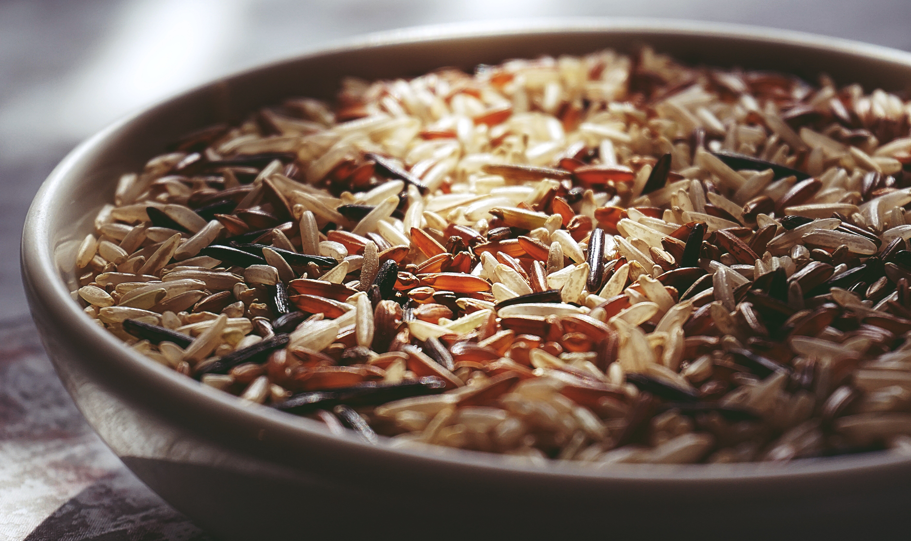

Recipe
I Love Poultry Pour Over
I Love Poultry Pour Over
This is some tasty goop that they pour ontop of my kibble, I like it, it makes my kibble yummy. I can never decide if I like chicken or turkey better
Image



Ingredients
- 3Lbs Chicken or Turkey on the bone
- 1 cup of frozen vegetables
- 1 cup of whole grain rice
- water
Prep the meat
- Boil meat in a large pot
- Cool meat and save bone water
- Debone and chop up
Prep Rice
- Boil rice in the bone water
use more than the normal amount of water for making rice - puree the overcooked rice
- Boil rice in the bone water
Put it together
- Mix the frozen vegetables, chopped meat, and rice together
- Portion into 3 day batches
- Let the pourover mixture cool
- Freeze anything that you won't use in the next 3 days
Yummy Yummy!
This is literally my favourite thing. My humans pour it over my kibble and then I always finish my dinner.
If you are interested in more food ideas, check out my recipes page!